Choose a world
Every world opens with all tools available. Runs in a recent desktop browser; a VR headset works too when the browser offers WebXR.
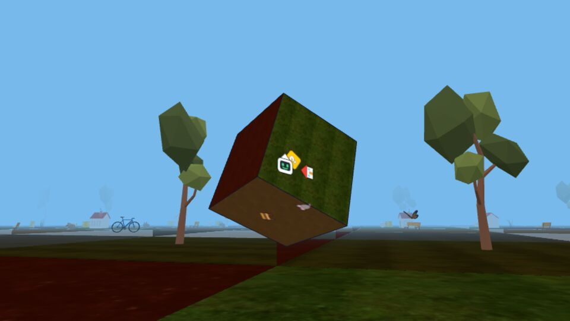
Cube
Six squares glued like the faces of a cube. Three squares meet at each corner, so the angles around a corner add up to only 270°.
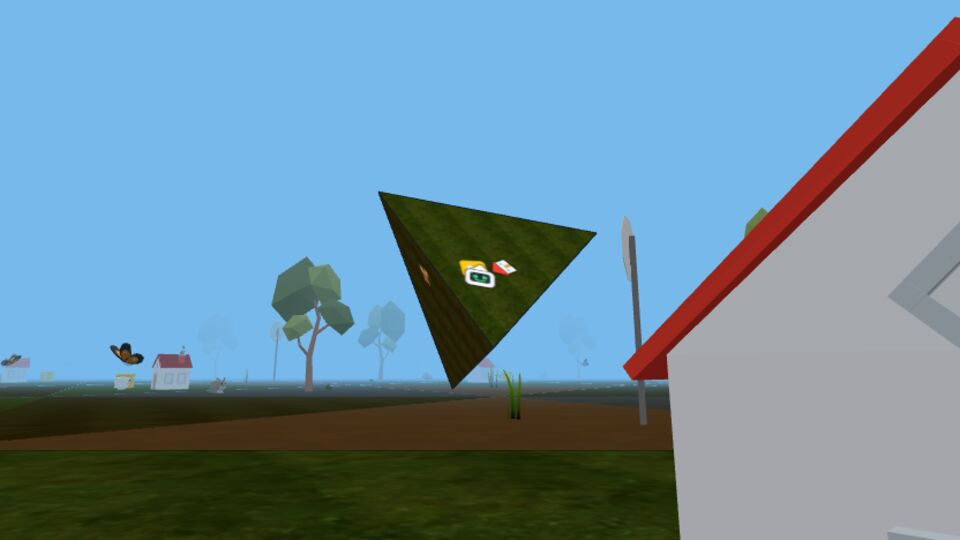
Tetrahedron
Four triangles, each glued to the other three. At every corner the angles add up to just 180°, and you can see your own reflection in the sharpest corners of all.
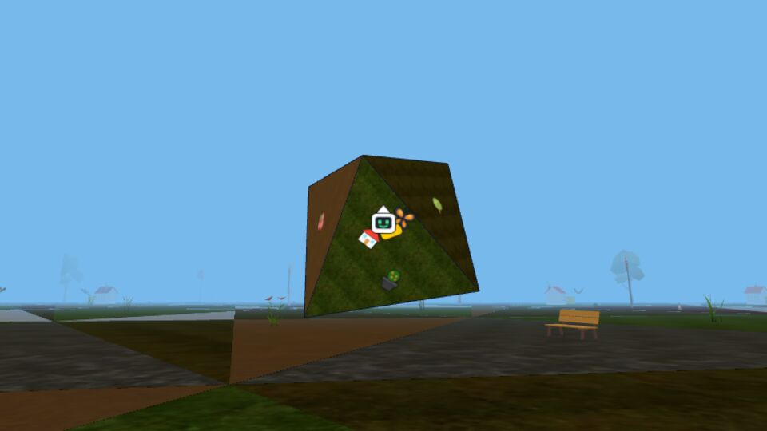
Octahedron
Eight triangles, four meeting at each corner for a total of 240°.
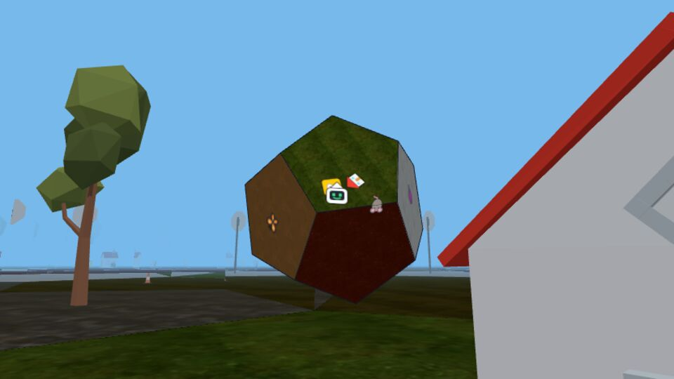
Dodecahedron
Twelve pentagons, three at each corner. This is the "flattest" of all the platonic solids.
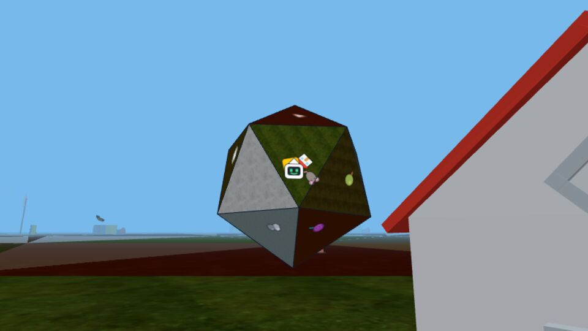
Icosahedron
Twenty triangles, five at each corner, for a total of 300°.
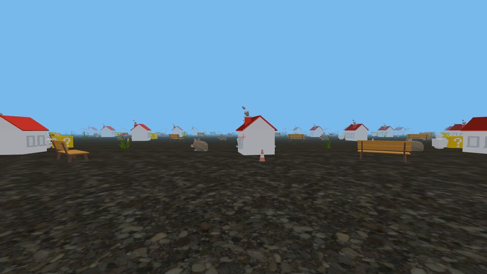
Flat torus
One square whose opposite edges are glued. Walk off one edge and you come back in from the opposite one. Look ahead: the same house repeats forever. The world loops around, but is it curved?
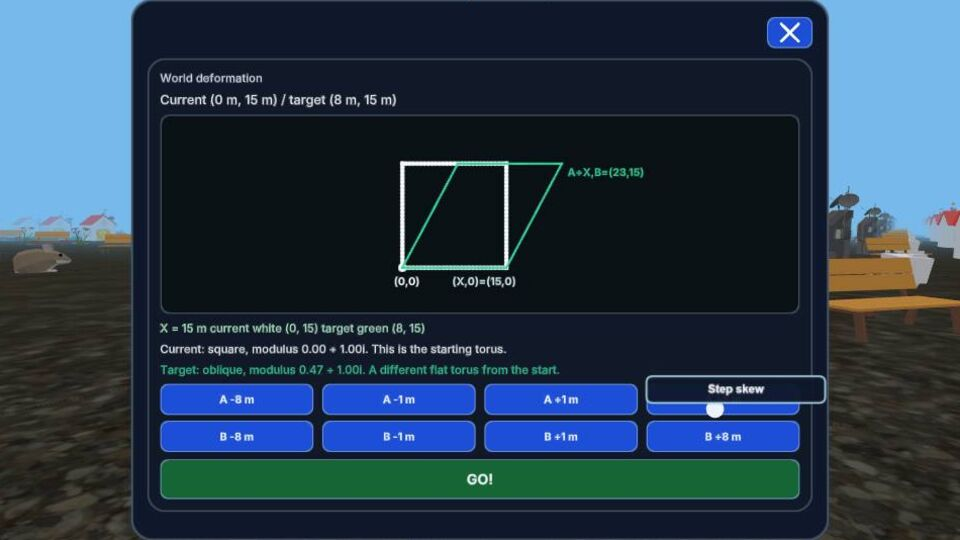
Exploring moduli space of a flat torus
The flat torus with a geometry computer that reshapes it, shearing the square into a parallelogram. Which shapes give the same world?
How to play
The interface in a few steps. You start next to a house and a yellow question cube; the cube holds a short tutorial and the goal of the world.
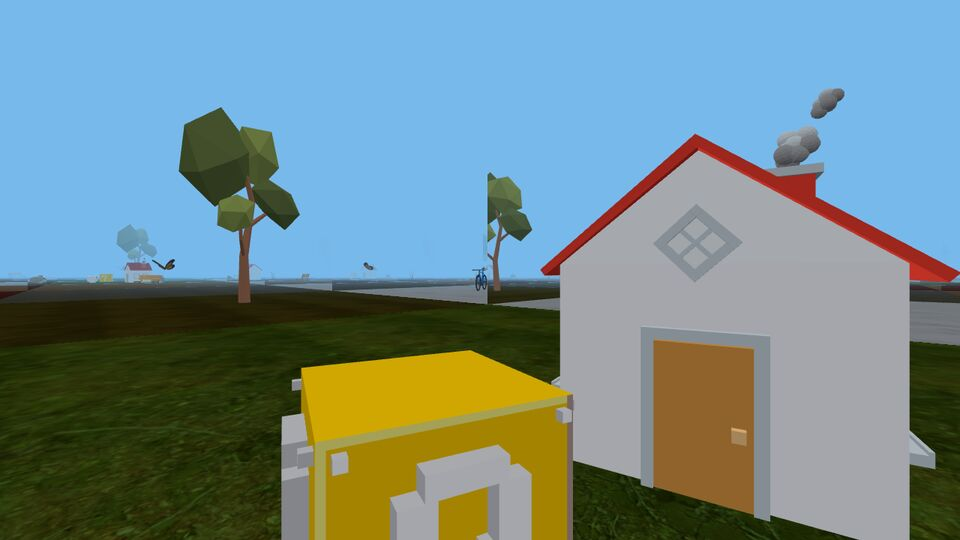
1Look and walk
You start next to a house and a yellow question cube.
- Click the view once so the mouse turns your head. Esc gives the mouse back.
- Walk with W A S D or the arrow keys; turn with the mouse or Q / E.
- Walk off the edge of a flat piece and you carry on onto the piece glued to it.
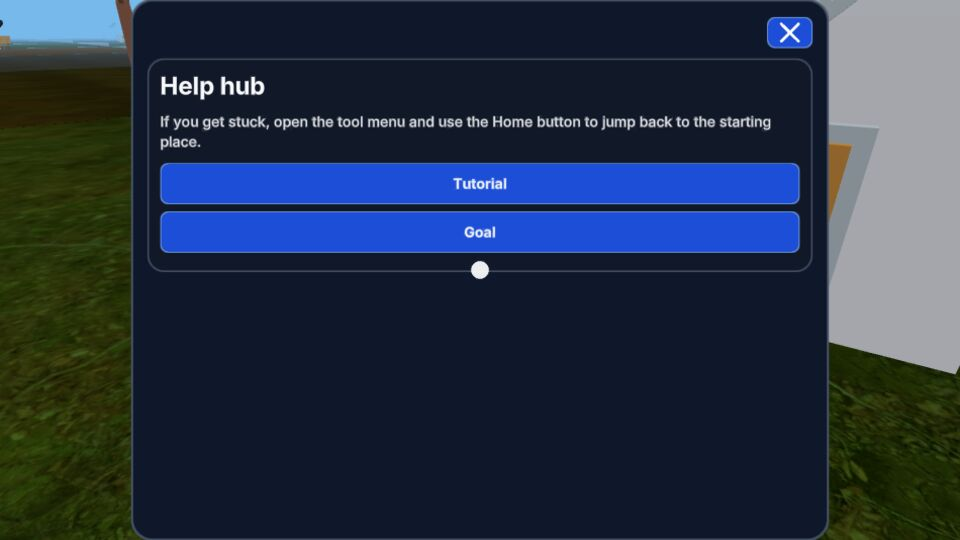
2Read the goal
Aim at the yellow cube and right-click it.
- Tutorial explains everything you can do, one topic at a time, with pictures and the buttons to press on your device; Goal says what to look for in this world.
- Aim at anything and press H for help about it.
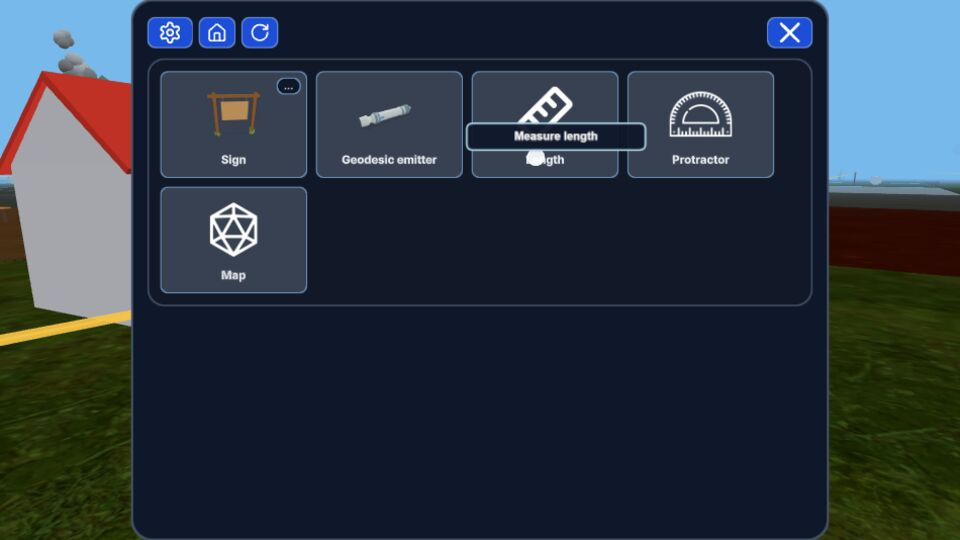
3Open the tool menu
Right-click (or press F) while aiming at empty floor.
- Move the mouse to a tool and left-click to pick it. The chosen tool shows in the bottom-left corner.
- Top-left buttons: settings (choose another world), Home (back to the start if you are lost), reload (press twice).
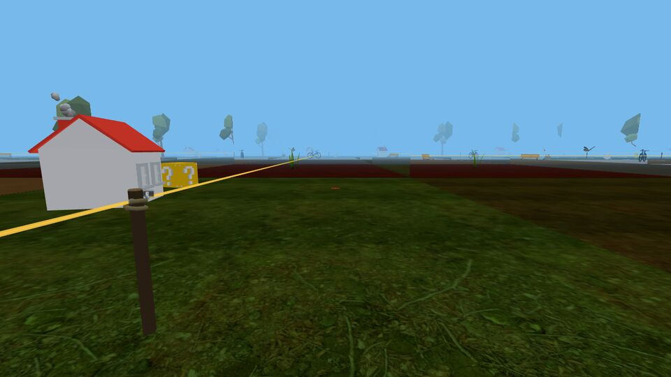
4Draw a straight line
Pick Geodesic emitter, aim at the floor, left-click.
- A post appears and fires a short, locally straight ray the way you are facing. Left-click the ray to make it 2 m longer.
- A ray stops if it runs into a corner: each corner of the surface is surrounded by a thin column.
- Here a ray went once around the cube and came back to its own post.
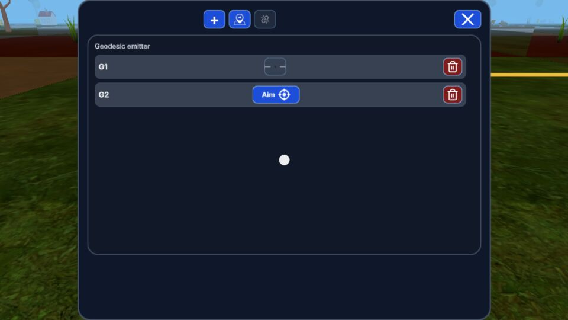
5Aim a ray
Right-click a post to open its menu: it lists the post's rays.
- Press Aim next to a free ray: the ray now points wherever you look. Left-click to fix it.
- If it ends on another post, or close to one, it locks there.
- + adds a ray in a random direction; the bin deletes a ray.
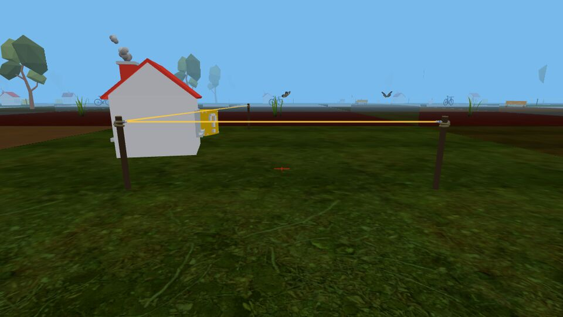
6Locked and free rays
A ray with a post at both ends is locked; it turns amber.
- A free ray (cyan) can be aimed and made longer; a locked one cannot, and shows a lock in the post's menu.
- A ray locks when it reaches another post, or when you put a new post on a free ray: the post cuts it in two.
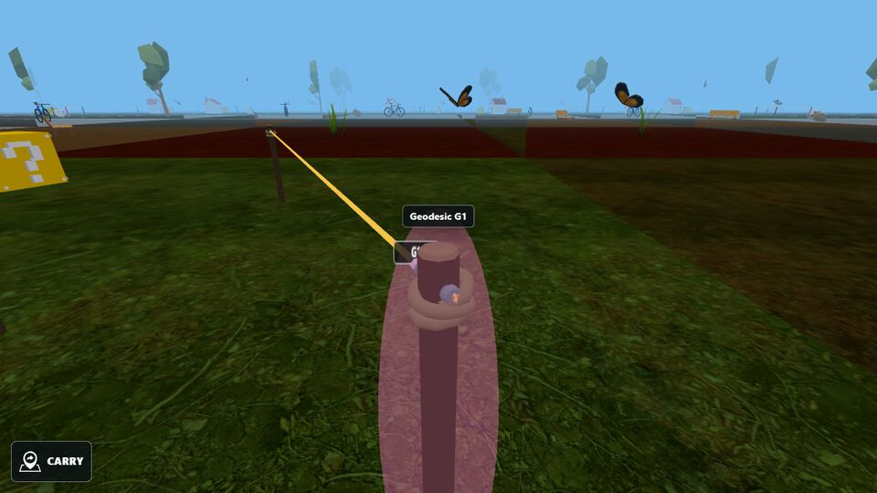
7Move a post
Aim at a post and press G to pick it up; G or left-click puts it down.
- Locked rays stay attached: while you walk they are redrawn as straight rays between the posts, going the same way around the world.
- Free rays are removed when you pick a post up. Putting a post down on a ray cuts that ray.
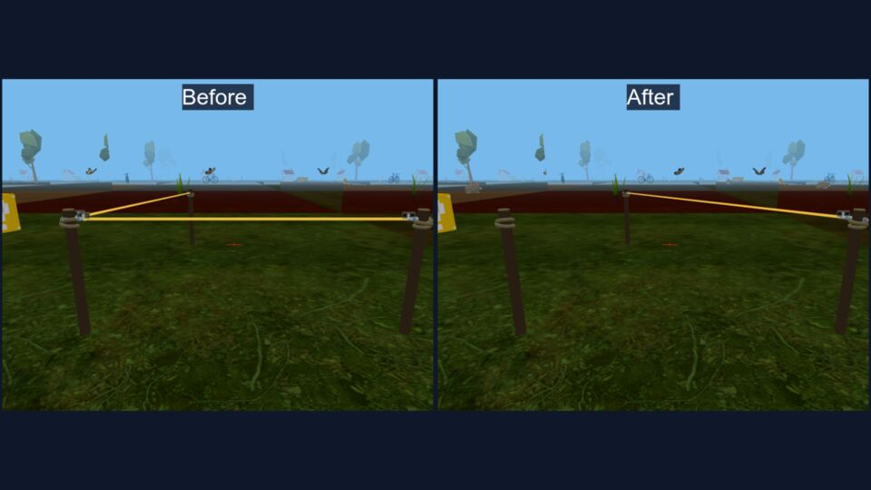
8Unite two geodesic segments and shorten the curve
The orange button in a post's menu unites two of the post's locked geodesic segments into one curve and detaches it from the post.
- Left-click the two segments near the post.
- The curve-shortening flow then moves the corner where they meet so that the curve gets shorter, until it is a geodesic between the other two posts, or a closed geodesic.
- A closed curve around a corner of the solid shrinks to nothing and disappears.
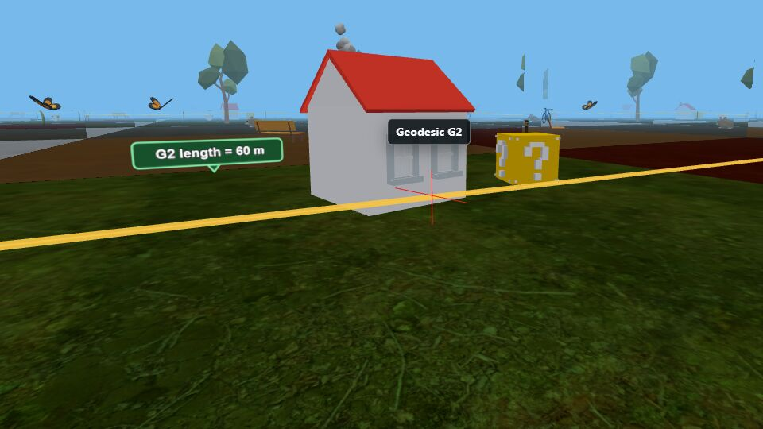
9Measure
Pick Length and left-click a ray to see its whole length, wherever it goes.
- The loop around the cube is exactly 60 m: four faces of 15 m.
- Protractor: click a post or a crossing, then two rays leaving it. The angle goes counter-clockwise from the first ray to the second.
- With no tool selected, click a measurement to remove it.
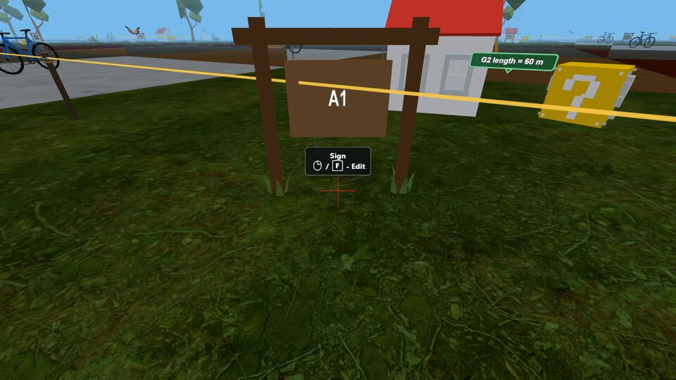
10Mark places
Pick Sign and left-click the floor.
- Signs are numbered A1, A2, … so you can tell places apart. Right-click a sign to type your own text or delete it.
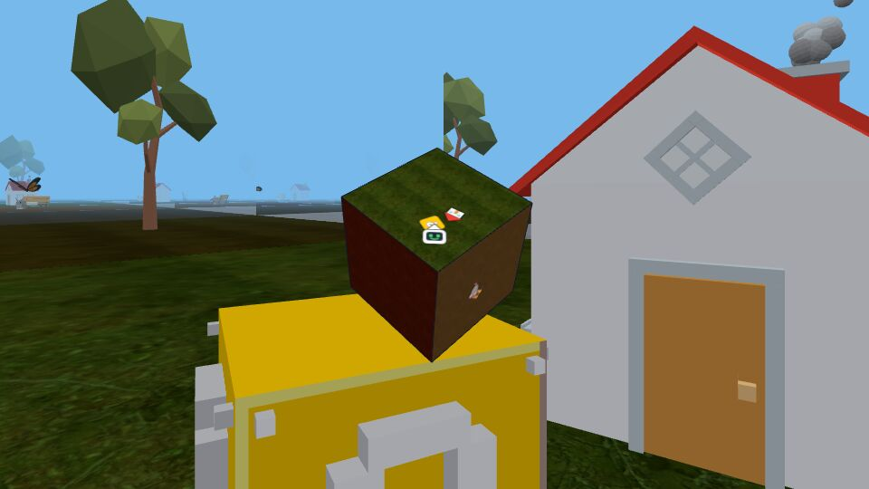
11See the whole world
In the cube and the other solids, pick Map.
- The world appears as a small solid in front of you, with you and the objects on it. Left-click to close it.
All controls
Keyboard and mouse on a computer; the right-hand column is for a VR headset.
| To | Computer | VR headset |
|---|---|---|
| Capture the mouse to look around | Click the view | Turn your head |
| Walk | W A S D or the arrow keys | Stick forward / back |
| Turn | Mouse, or Q / E | Stick left / right, or turn your head |
| Use the selected tool | Left click | Trigger |
| Open the tool menu, or an object's menu | Right click or F | Side trigger |
| Pick up or put down a post | G | Lower face button (A / X) |
| Help about what you aim at | H | Upper face button (B / Y) |
| Aim at the next object behind the first | Tab or mouse wheel | Not available |
| Close the menu, release the mouse | Esc | Side trigger |
| Start over: back to the start, removing everything you placed | R | Press the stick |
A good way to investigate
1. Predict
“If I walk straight ahead, I will come back to where I started.”
2. Try it
Walk, place a sign, fire a straight ray, measure a length or an angle.
3. Record
Sketch the route, write the measurements, and note what you expected.
4. Explain
Did it match? What rule about how the pieces are glued explains it?